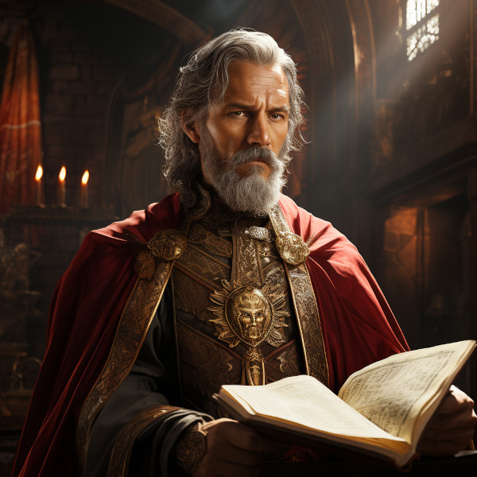

Figure 1: Eolande Altherion
Exiled to a minor role as a groundskeeper at the eastern borders of the aelven empire, he retained only a small contingent of non-anashim slaves, one of whom was Thalion.
Justiciar, if you do not obey the law, why do you call on others to do so? If the law is grand, as you surmise, it is grand to observe it. If you do not obey the law, it is you who have become the law breaker, and it is the duty of those who obey the law to disregard your authority. You have demoted yourself, you are the rebel, the renegade, not I.
And with these words, the ruling Elder banished Eolanda Altherion from the court.